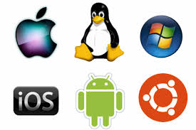
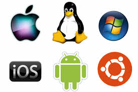

A glance into Operating Systems and File Systems
Atif AhmedOverview
An operating system (OS) is an interface between a computer user and computer hardware.
 

Under Operating System's "umbrella"
An operating system (OS) is system software that manages computer hardware and software resources and provides common services for computer programs.
It performs all the basic tasks like:
- Memory management
- Process management
- Controlling peripheral devices
- File management
Memory management
An Operating System does the following activities for memory management:
- Keeps tracks of primary memory, i.e., what part of it are in use by whom, what part are not in use.
- Allocates the memory when a process requests it to do so.
- De-allocates the memory when a process no longer needs it or has been terminated.
Process management
An Operating System does the following activities for process management:
- Keeps tracks of processor and status of process.
- Allocates the processor (CPU) to a process.
- De-allocates processor when a process is no longer required.
- Decides which process gets the processor when and for how much time. This function is called process scheduling.
Controlling peripheral devices
An Operating System does the following activities for controlling peripheral devices (device management):
- Keeps tracks of all devices.
- Decides which process gets the device when and for how much time.
- Allocates the device in the efficient way.
- De-allocates devices.
File management
An Operating System does the following activities for file management:
- Keeps track of information, location, uses, status etc. The collective facilities are often known as file system.
- Decides who gets the resources.
- Allocates the resources.
- De-allocates the resources.
File System
What else?
- Relational Selectors
- Structural pseudo classes
- Embedding Web fonts
- Keyframes
- Canvas, SVG
- Drag and Drop
Thank You
http://atif93.github.io/os-tutorial-basic/